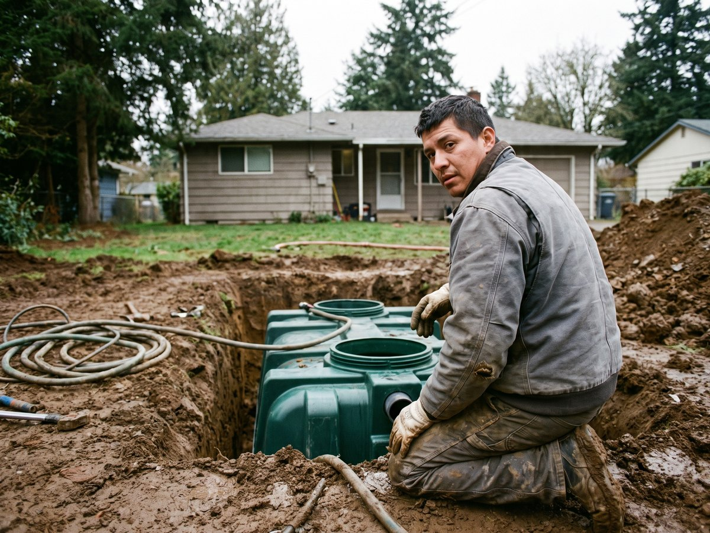
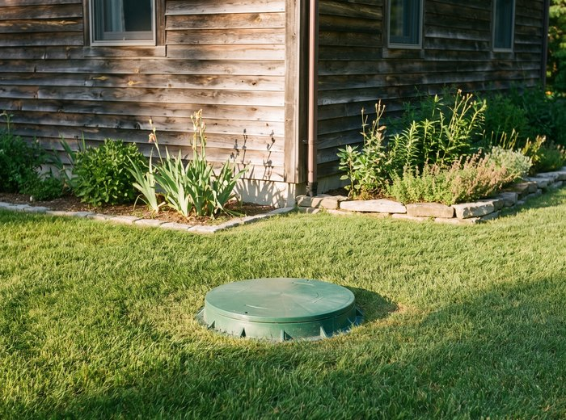
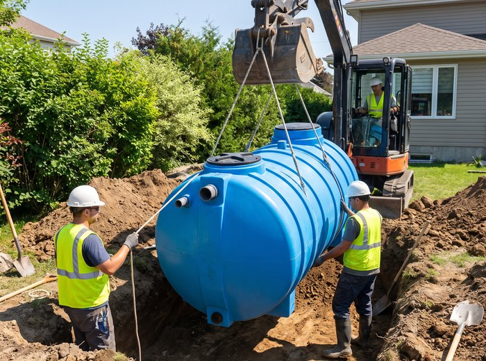
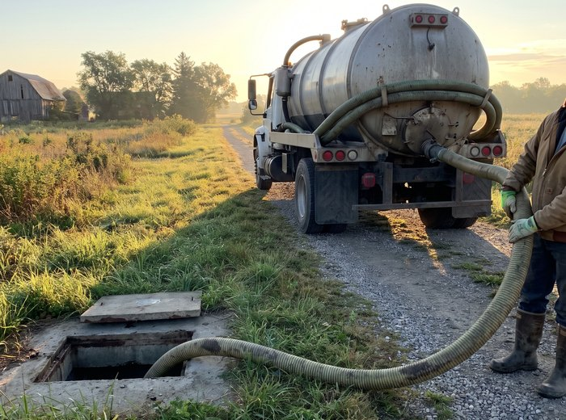
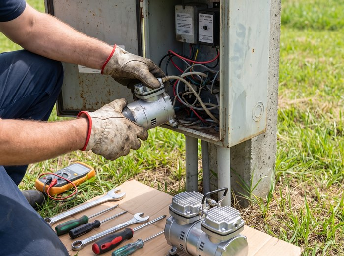

12 лет ставим септики: подбор, монтаж под ключ, обслуживание и откачка недорого в Подольске и районе.

Только септики и канализация для частных домов. Не беремся за всё подряд.
Приезжаем с техникой и материалами. Вечером септик уже работает.
На монтаж и на корпус. В договоре, а не на словах.
Обслуживаем то, что поставили: приезжаем по звонку, без посредников.
Подбираем септик под грунт и количество жильцов, а не самый дорогой из каталога.

Котлован, установка, подключение, запуск.

Топас, Астра, Юнилос: продажа и монтаж.

Регламентная чистка, замена компрессора.

Восстановим старый септик или заменим.
Работаем в Подольске и районе с 2014 года. Ставим септики только частным домам.
Начинали вдвоём с одним экскаватором, сейчас в бригаде шесть человек и две единицы техники. За это время поставили больше семисот станций и накопительных ёмкостей в Подольске, Климовске, Щербинке и по Симферопольскому шоссе.
Мы не продаём самый дорогой септик из каталога. Сначала смотрим грунт, уровень воды и сколько человек живёт в доме постоянно, а потом называем модель. Если участок позволяет обойтись накопительной ёмкостью, так и скажем.
Обслуживаем то, что поставили: приезжаем по звонку в течение суток, компрессоры и мембраны держим на складе.
Несколько объектов этого сезона: что стояло, что поставили и во сколько обошлось.
Цены с работой и материалами. Точную сумму называем после выезда, выезд бесплатный.
| Услуга | Что входит | Цена |
|---|---|---|
| Выезд и подбор септика | Замер участка, анализ грунта, расчёт | Бесплатно |
| Монтаж накопительного септика | Ёмкость 3 м³, котлован, подключение | от 89 000 ₽ |
| Монтаж станции биоочистки | Станция на 5 человек, монтаж, запуск | от 129 000 ₽ |
| Откачка и промывка | До 4 м³, выезд в течение дня | от 4 500 ₽ |
| Замена компрессора | Компрессор в наличии, работа 1 час | от 9 800 ₽ |
Живые отзывы наших заказчиков из Подольска и района.
Поставили станцию за день, как и обещали. Отдельно понравилось, что отговорили от модели подороже: сказали, что для четверых она избыточна.
Меняли старые бетонные кольца, которые заиливались каждый сезон. Работали два дня, землю вывезли. Зимой ничего не замёрзло.
Вызывали на аварийную откачку в воскресенье, приехали через четыре часа. Заодно поменяли компрессор, который был у них с собой.
Разбираем вопросы, которые нам задают на выезде чаще всего.
Считаем на примере дома для четверых: цена монтажа, электричество и откачка. Ёмкость дешевле на входе, но догоняет по деньгам к третьему году.
Читать далееЧто такое якорение бетонной плитой, когда оно обязательно и как понять уровень воды на участке без геологии, по соседским колодцам.
Читать далееКонсервировать или оставить работать. Что делать с компрессором, нужно ли сливать воду и почему нельзя откачивать станцию досуха перед морозами.
Читать далееПерезвоним в течение 15 минут, зададим три вопроса про участок и назовём цену. Выезд на замер бесплатный.